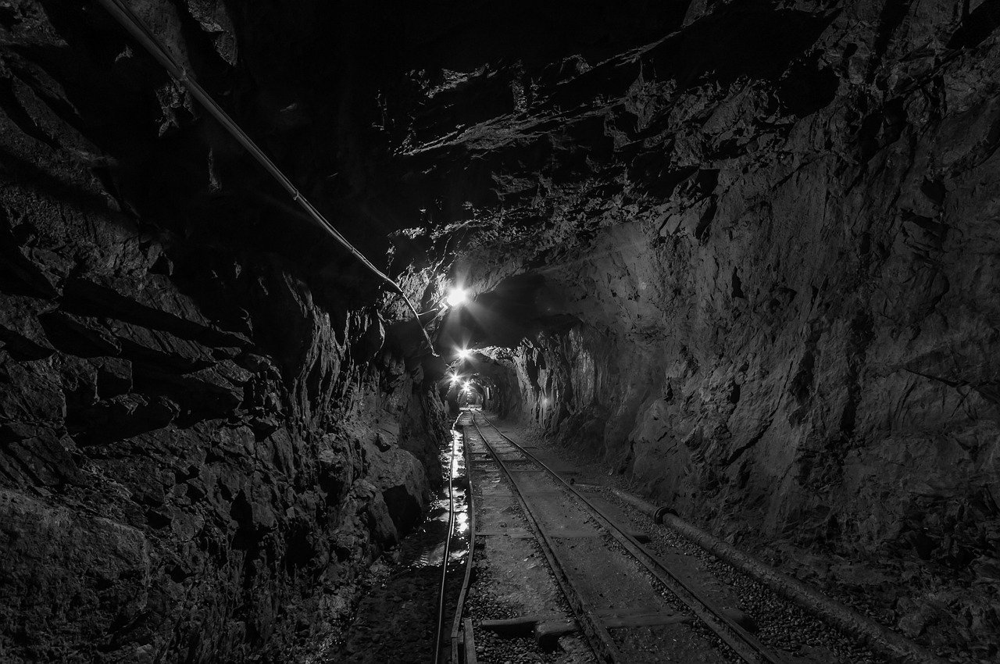

Búsqueda Mineral 3 - Mina de 500 años de antigüedad y compro muchos minerales raros
Hoy en búsqueda
mineral tercera parte, partimos desde las minas del
cerro rico hasta la ciudad de Oruro (Bolivia) para hacer un poco de turismo mineralógico.
Para ello visitaremos una antigua mina de plata y oro trabajada por los incas y compramos minerales a
precios muy buenos !
Además de probar la rica gastronomía de Oruro !

Museo minero del Socavón (Bolivia - Oruro)

El museo minero se encuentra a las faldas del cerro pie de gallo, específicamente en el interior (en el subsuelo) del santuario del la virgen del socavón.
Un poco de historia:
Antiguamente formaba parte de una antigua mina, según su historia era trabajada de manera superficial por los incas que ya dominaban esa zona, lo que se estima se empezó a recolectar el mineral de plata cerca de los años 1445 a 1480. Con la llegada de los españoles se comenzaron a hacer exploraciones de estos recursos minerales, en aquel momento la plata era una nueva fuente de riquezas, ya que estas latitudes eran muy abundantes sin mencionar que las menas era de una ley muy alta. Oficialmente parte de este yacimiento comenzó sus labores aproximadamente hacia el año 1595. El yacimiento era tan rico que los trabajadores del cerro rico de Potosi al escuchar la buena paga por trabajar en estas minas, decidían irse de Potosí.

Réplica de veta mineralógica de casiterita, vivianita y cuarzo
| Museo Minero de Oruro | Valor de Entrada (2019) | ||
|---|---|---|---|
| Niños | 6 Bs. | ||
| Adultos (Nacionales) | 7 Bs. | ||
| Extranjeros | 12 Bs. | ||
| Derechos para sacar fotografías | 3 Bs. | ||
| Derecho para filmar | camara profesional o celular | 20 Bs. |
Atractivos Principales del Museo minero del socavón

1 -Replica de veta mineral: En la entrada se encuentra una replica de una veta
mineralógica constituida por casiterita, vivianita y cuarzo.
2- Leyendas locales: Podemos ver algunas representaciones como la del famoso
chiru-chiru , una especie de robin hood de los andes, Según dicen que ese fue el lugar donde se refugio
y la virgen del socavón lo cuido hasta su muerte.
3- Ingreso al la mina: Pasamos por la galería subterránea que nos llevara hacia la
mina, consta de 90 escalones, luego abajo podemos apreciar la estructura de madera que sostiene la mina
para evitar derrumbes. esta mina formaban parte de los antiguos parajes de la mina san josé de Oruro,
una de las minas mas extensas y profundas de la ciudad de Oruro, al ingresar se puede sentir el aroma a
azufre característico de este yacimiento hidrotermal polimetálico.
4- Vitrinas con objetos usados en la minería local: podemos apreciar un sin fin de
objetos usados en distintas épocas de la minería en Bolivia, entre ellos martillos neumáticos, objetos
donde se robaba el minerales (Jukus o ladrones de minerales), detonadores de dinamita y un carro de
minero junto una rampa donde caía la mena hacia el carro
5- Colección de minerales: Posee una modesta colección de minerales propias del
lugar y de distintas partes de Bolivia, si eres fanático de los minerales ya tienes una excusa para
visitar este museo !!
6- El tio de la mina: El famoso tío es el guardián y protector de todas las riquezas
minerales, es una tradición que los mineros en Bolivia le rindan culto y den una ofrenda al tío para que
les cuide y los guie hacia una buena veta mineral que brinde fortun

Tio de la mina - Guardian y protector de las riquezas minerales
Redacción: Foro de minerales
Quiza te puede interesar